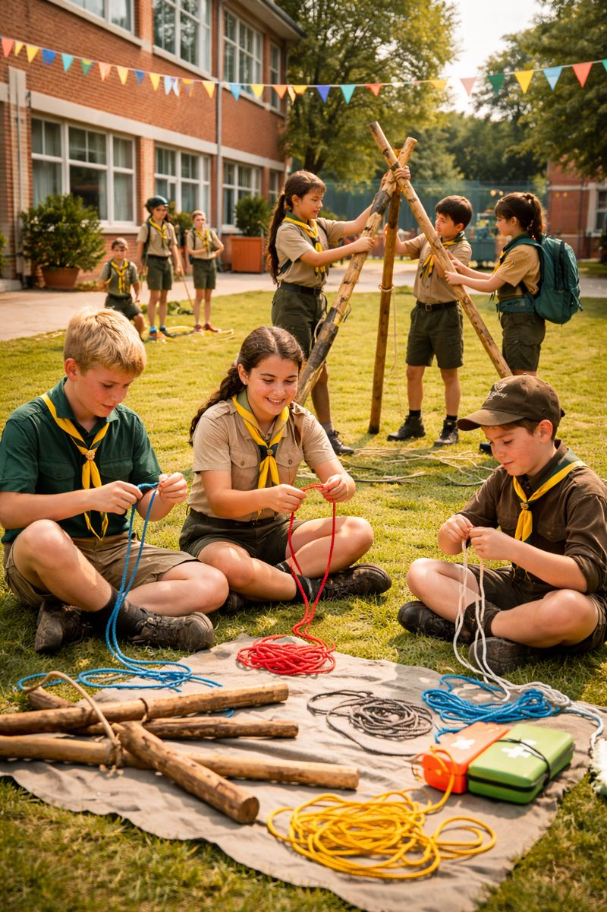
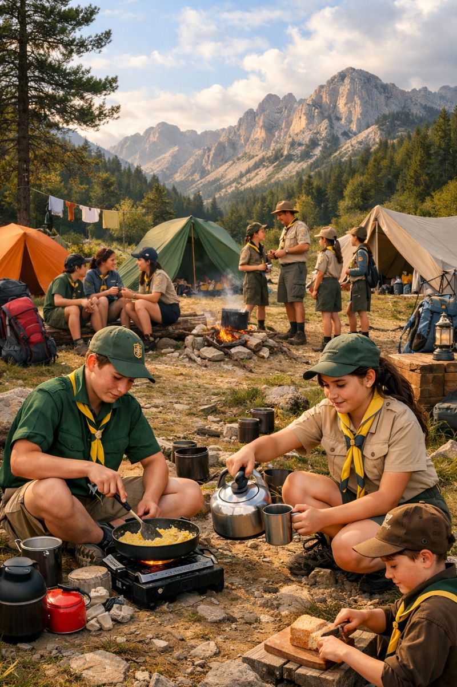
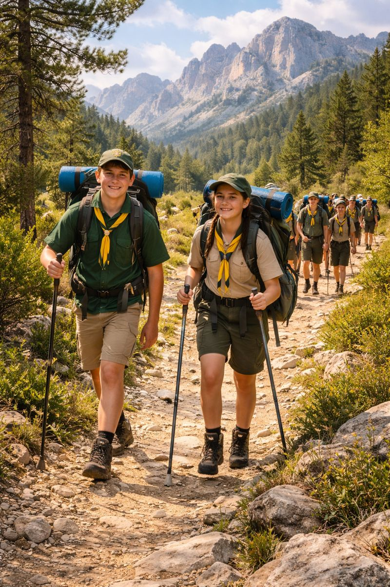

Los sábados

Campamentos

Nos reuniremos los sábados por la tarde para compartir un espacio lleno de actividad y diversión, donde realizaremos deportes, talleres y propuestas dinámicas pensadas para aprender jugando. A través de estas actividades, los niños y jóvenes hacen nuevos amigos, cantan, trabajan en equipo, desarrollan proyectos y participan en acciones de servicio a la comunidad, creciendo como personas en un ambiente cercano, educativo y lleno de valores.
Uno de los momentos más especiales y esperados del año scout son los campamentos, ya que representan una oportunidad única para convivir, aprender y crecer juntos fuera de la rutina diaria. Durante fechas señaladas como Navidad y Semana Santa, el grupo realiza convivencias de varios días en las que se refuerzan los lazos de amistad, se trabajan valores como la cooperación y el respeto, y se disfrutan actividades en contacto con la naturaleza. En verano, el curso culmina con un gran campamento, una experiencia intensa y llena de aventuras donde los scouts ponen en práctica todo lo aprendido durante el año. Estos días compartidos, llenos de juegos, retos, servicio y momentos de reflexión, dejan recuerdos imborrables y aprendizajes que acompañan a cada scout para toda la vida.
En las excursiones o raids viviremos aventuras y aprenderemos al aire libre. Es el momento de poner en práctica habilidades como la orientación, el trabajo en equipo y la autosuficiencia. Caminaremos por entornos naturales, llevando lo necesario en la mochila, lo que fomentará nuestra responsabilidad y la planificación. Durante el recorrido superaremos desafíos, tomamos decisiones en grupo y reforzamos valores como la solidaridad, el respeto por la naturaleza y el compañerismo, convirtiendo cada raid en una vivencia formativa y memorable.